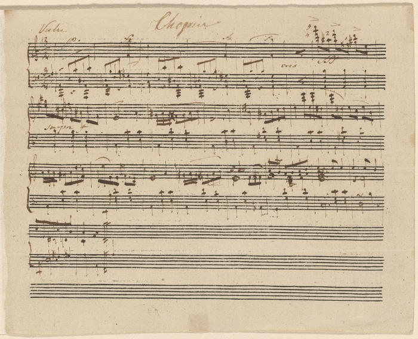

안녕하세요 라보엠입니다.
뉴욕의 모건 도서관 & 박물관에서 프레데릭 쇼팽의 미공개 왈츠가 최근 발견되었습니다. 이 발견은 클래식 음악계에 큰 반향을 일으키고 있습니다. 쇼팽은 19세기 낭만주의 음악의 대표적인 작곡가로, 그의 작품은 피아노 음악의 정수로 여겨집니다. 특히 왈츠 장르에서 쇼팽의 업적은 독보적이며, 그의 왈츠들은 단순한 춤곡을 넘어 예술적 깊이를 지닌 작품으로 평가받고 있습니다. 이러한 맥락에서 새로운 쇼팽의 왈츠 발견은 음악사적으로 매우 중요한 사건이라고 할 수 있습니다.

쇼팽 왈츠 A minor - Chopin - Valse in A minor
발견 경위
모건 도서관 및 박물관의 큐레이터 로빈슨 맥클렐란이 봄철 문화 유물 정리 중 우연히 이 작품을 발견했습니다. 약 10cm x 13cm 크기의 작은 악보에 쇼팽의 자필 서명이 있었습니다. 맥클렐란은 처음에 이 곡을 알아보지 못했고 진위 여부에 대해 의문을 가졌습니다. 모건 도서관은 19세기 유럽 문화유산과 관련된 방대한 컬렉션을 보유하고 있으며, 정기적으로 소장품을 정리하고 연구합니다. 이번 발견은 그러한 일상적인 작업 중에 이루어진 것으로, 도서관 측은 이 악보가 어떻게 그들의 소장품에 포함되게 되었는지에 대해 조사 중입니다. 현재로서는 19세기 말 또는 20세기 초에 한 개인 수집가로부터 기증받았을 가능성이 높은 것으로 추정되고 있습니다.
작품 분석
이 왈츠는 1830년에서 1835년 사이, 쇼팽의 20대 초반에 작곡된 것으로 추정됩니다. 약 1분 길이의 짧은 곡이지만 완성된 작품으로 평가됩니다. 유명 피아니스트 랑랑은 이 곡을 "극적인 어둠에서 긍정적인 것으로 변화하는" 진정한 쇼팽 스타일이라고 평했습니다. 이 작품은 쇼팽의 초기 스타일을 잘 보여주는 것으로 평가되며, 그의 후기 작품들에서 볼 수 있는 복잡성과 깊이는 덜하지만, 이미 그만의 독특한 화성 언어와 멜로디 라인을 보여주고 있습니다. 특히 왼손의 베이스 라인과 오른손의 우아한 멜로디 사이의 상호작용은 쇼팽의 특징적인 스타일을 잘 드러내고 있습니다. 또한 이 작품에서는 쇼팽의 폴란드 민속 음악에 대한 영향도 엿볼 수 있어, 그의 음악적 뿌리를 이해하는 데 중요한 자료가 될 것으로 보입니다.
진위 확인 과정
맥클렐란은 펜실베이니아 대학의 쇼팽 전문가 제프리 칼버그와 협력하여 작품의 진위를 확인했습니다. 다음과 같은 요소들이 검토되었습니다:
- 종이와 잉크 분석: 악보에 사용된 종이의 질감, 두께, 수분 함량 등을 분석하여 19세기 초반에 사용되던 종이와 일치하는지 확인했습니다. 또한 잉크의 화학적 성분을 분석하여 당시 사용되던 잉크의 특성과 일치하는지 검증했습니다.
- 필체 검증: 쇼팽의 알려진 다른 자필 악보들과 비교 분석을 실시했습니다. 특히 음표의 모양, 기호의 사용, 서명 등을 세밀히 대조했습니다.
- 음악적 스타일 평가: 작품의 화성 구조, 멜로디 라인, 리듬 패턴 등을 분석하여 쇼팽의 다른 초기 작품들과의 유사성을 검토했습니다.
- 쇼팽 특유의 베이스 음자리표와 낙서 확인: 쇼팽은 특유의 베이스 음자리표 모양을 사용했는데, 이 악보에서도 동일한 특징이 발견되었습니다. 또한 쇼팽이 자주 악보 여백에 남겼던 낙서나 메모의 스타일과도 일치하는 점들이 발견되었습니다.
이러한 종합적인 조사 결과, 모건 도서관은 이 작품이 쇼팽의 진품일 가능성이 매우 높다고 결론지었습니다. 그러나 100% 확실성을 위해 추가적인 연구와 검증 과정이 계속될 예정입니다.
의의
이번 발견은 50년 이상 만에 처음으로 확인된 쇼팽의 새로운 작품입니다. 쇼팽은 39세의 젊은 나이로 사망했고, 그의 작품 수가 많지 않아 새로운 곡의 발견은 매우 희귀한 일입니다. 이 발견은 쇼팽의 작곡 스타일과 초기 작품에 대한 이해를 넓히는 데 기여할 것으로 기대됩니다. 특히 이 왈츠가 쇼팽의 20대 초반에 작곡되었다는 점에서, 그의 음악적 발전 과정을 연구하는 데 중요한 자료가 될 것입니다. 또한 이 발견은 19세기 음악 원고의 보존과 연구의 중요성을 다시 한 번 상기시키는 계기가 되었습니다. 앞으로 이 작품은 공개 연주회를 통해 대중에게 소개될 예정이며, 음반 녹음도 계획되어 있습니다. 음악학자들과 연주자들은 이 새로운 쇼팽의 왈츠를 통해 그의 음악 세계를 더욱 깊이 이해하고, 해석의 새로운 가능성을 탐구할 수 있을 것으로 기대하고 있습니다.
Lost Chopin waltz discovered almost 200 years after it was written | BBC News